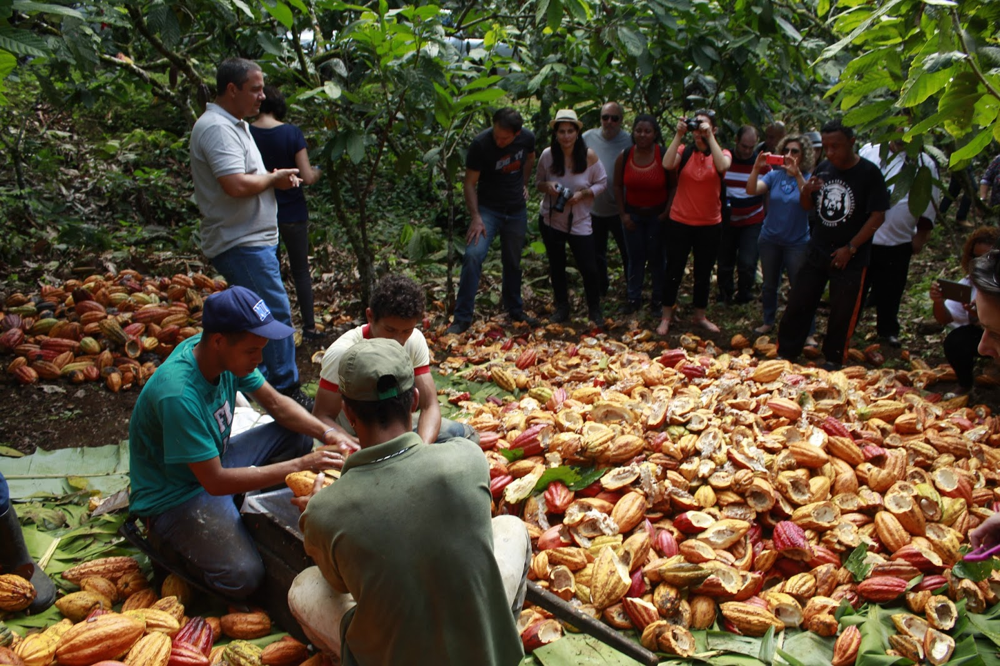
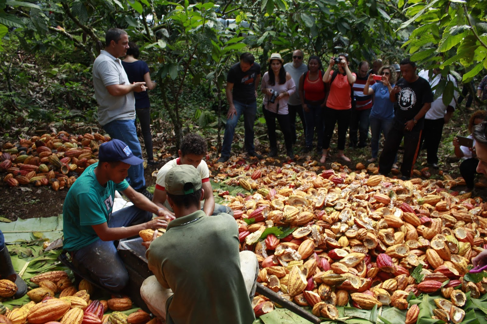

História
A história do município está diretamente ligada à expansão do cultivo do cacau. Segundo a tradição memorialista da região, o vale do rio Panelão começou a ser desbravado no ano de 1889, quando algumas famílias de Canavieiras, Bahia, passaram a buscar novas terras para o plantio de cacau por dois motivos principais: primeiro, por força das graves cheias do Rio Pardo que comprometiam a produção agrícola de Canavieiras e segundo, pelo declínio e desaparecimento dos diamantes do rio Salobro, tornando primordial a necessidade de novas fontes de produção..
Atrações Turísticas
Explorando a natureza– Uma das principais atrações de Camacan é a sua rica natureza. A cidade está cercada por belas paisagens, como rios, cachoeiras e trilhas. Uma opção é visitar o Parque Municipal do Rio Almada, onde é possível fazer trilhas ecológicas, tomar banho de rio e apreciar a fauna e flora local. Outra opção é conhecer a Cachoeira do Pancadão, que possui uma queda d’água de aproximadamente 30 metros e é um ótimo local para relaxar e se refrescar.
Conhecendo a cultura local – Camacan também possui uma rica cultura, que pode ser explorada através de suas festas tradicionais e manifestações culturais. Uma das principais festas da cidade é o São João, que acontece no mês de junho e conta com apresentações de quadrilhas, comidas típicas e shows musicais. Além disso, a cidade possui diversos grupos de capoeira, que realizam apresentações e aulas abertas ao público.


Visita ao Centro Histórico – Camacan está localizada próxima a diversas praias paradisíacas, que são ótimas opções para quem deseja relaxar e aproveitar o sol. Uma das praias mais conhecidas é a Praia de Canavieiras, que possui águas cristalinas e uma extensa faixa de areia. Outra opção é a Praia de Algodões, que é mais tranquila e possui uma beleza natural incrível. Ambas as praias contam com infraestrutura para receber os visitantes, como bares e restaurantes.
 
